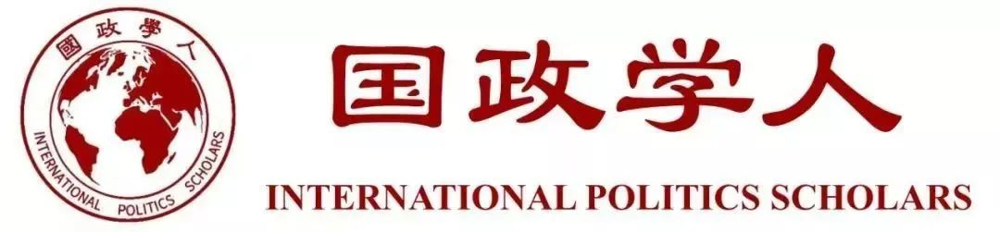

收录于合集

作品简介
【作者】 莱斯洛特·奥德加德（Liselotte Odgaard），哈德逊研究所（Hudson Institute）高级访问研究员。其研究重点是东亚及太平洋地区、发展合作和全球多边合作领域的政策分析、中欧关系和北极政策等。
【编译】 冯毓婧（国政学人编译员，国际关系学院国际政治系）
【校对】 施榕、石雨宸
【审核】 施榕、徐琛
【排版】 赵怡雯
【文章来源】
Odgaard, L. (2020). Responsibility to Protect goes to China: An interpretivist analysis of how China’s coexistence policy made it a Responsibility to Protect insider. Journal of International Political Theory. https://doi.org/10.1177/1755088219899416.
期刊介绍
《国际政治理论杂志》（Journal of International Political Theory）是一个跨学科、经同行评议的、从一系列理论和哲学角度探讨国际和全球政治的论坛。该杂志欢迎历史性、分析性、比较性和规范性的方法，为社会科学和人文学科的学者提供了一个共同的场所，寻求推动新一代关于国际政治理论的利益广度的思考。
Responsibility to protect goes to China：An interpretivist analysis of how China’s coexistence policy made it a Responsibility to Protect insider
中国的“保护的责任”行动：中国的共存政策如何使其成为R2P的内部成员？
Liselotte Odgaard
内容提要
英国学派认为，大国采取“共存”的政策以获得合法性，这是国际社会的一个核心特征。本文采用诠释主义的方法，分析了中国采用“共存”方式制定有关平民的暴行罪的“保护的责任”规范。中国的“保护的责任”概念结合了以国家为中心和以人为中心的方法，注重国内现有制度的政治和经济能力建设。这一概念的提出与践行，使得中国这一非自由主义国家成为自由国际主义秩序重要的合法维护者。文章分为三个部分，第一部分首先回顾了英国学派关于大国如何在自由主义世界中获得合法性的辩论，以及20世纪90年代“保护的责任”在发展自由世界主义人权议程中的作用。在此基础上，文章的第二部分探讨了中国与自由世界主义行为体在将“保护的责任”发展为自由世界秩序核心理念上的外交互动。文章第三部分讨论了中国式“保护的责任”诠释的兴起及其对自由世界秩序、大国合法性和大国责任的影响。文章最后，作者结合对中国“共存”式的“保护的责任”政策的分析，提出了三个可供深入研究的问题及有关方向。
【关键词】
中国 共存 英国学派 诠释主义 保护的责任
文章导读
本文根据英国学派对大国合法性的理解，并结合诠释主义方法，对促进大国合法性的中国外交政策传统——“共存（Coexistence）”这一概念进行了探讨。英国学派关于大国合法性的广泛争论的焦点之一就是保护平民免受暴行罪侵害的规则和制度。文章向我们展示了，随着自由国际主义社会中保护的责任(Responsibility to Protect，R2P)议程的变化、中国的崛起以及国际社会对秩序和正义诉求的增加，中国是如何调整其共存的外交方针以适应自由国际社会对R2P概念的理解，从而获得合法性、并在定义与实施R2P中发挥核心作用的。 20多年来，人们就自由主义国际秩序的未来进行了广泛的辩论。在英国学派、自由主义、现实主义和建构主义广泛的研究视角中，崛起的中国都被视为自由秩序发展的关键。然而，却很少有人注意到英国学派的“共存”概念。这一概念强调了，不同规范的大国议程通过外交来适应国际社会(Bull，1995[1977]:64-67)。“共存”不意味着合作或是竞争，而是突出强调国家为其规范性议程争取空间的能力。国际社会作为一个社会化建构而成的领域，形成于历史上复杂的合作与冲突之中，所以“共存”具兼具社会性和历史性的特征。本文采用诠释主义的方法来理解国家行为是如何改变国际秩序的。
一、英国学派、“共存”与“保护的责任”
The English school, coexistence and R2P
本部分首先回顾了英国学派关于“共存”和“大国”的讨论。其后简要介绍了R2P概念，并将英国学派关于人权议程、经济权利议程、发展中国家诉求等方面的争论与R2P结合，从而引入中国独特的共存概念并介绍了中国共存外交政策原则的内涵及实践。英国学派对大国合法性获得及对崛起大国的诠释主义分析认为，中国是R2P规范的合法制定者。
“共存”是英国学派的一个核心概念，它认为规范和制度能够保护政治安排和外交政策的合法目标与方式(Butterfield，1972:341;Manning，1975:160-161)。
这些规范和制度是国际社会成员维持国际秩序的最基本条件(Bull，1995[1977]:19,66)。国际秩序的运行在历史性和社会性的维度上取决于合法性的获得方式，因此也取决于在维持秩序方面发挥主要作用的行为体。
在历史性和社会性维度上，共存是一种国家主观行为，由政党、官僚机构、学者以及政府代表等各种核心行为体的信念及其对外交政策决议的互动和影响组成(Northedge，1976:92)。而外交搭建了相互依存的世界中各个独立国家之间的沟通桥梁(Watson，1982:15)。
“大国”是共存着的具有特殊权利和义务的“俱乐部”成员，成员资格来源于国际社会中同样具有特殊管理权利和义务的其他成员的承认(Bull，1995[1977]:194-196)。
英国学派对大国的理解依赖于一种诠释主义的方法，认为一个大国具有能够施加影响的特殊权利，同时其特殊责任能被各国所接受(Zala，2020)。
事实上，对权利及义务的强调使得大国十分渴望肩负重大责任(Wight，1986:44)。但这些责任是有道德基础的，小国通过公众意见和批评来提醒大国它们的权利所承担的道德义务，这通常会限制大国追求国际目标的手段和程度(Watson，1982:208-209)。
在21世纪，“保护责任”（R2P）原则就是这样一种责任，它成为了大国合法性的关键。 R2P产生于上个世纪90
年代南斯拉夫和卢旺达的人道主义危机。2000 年成立的干预与国家主权问题国际委员会（International Commission on
Intervention and State
Sovereignty，ICISS）认为国际社会有权通过干预一个国家来制止暴行，并肯定了R2P原则在干预权辩论上的建设性建议(ICISS，2001)。
英国学派的主要争论围绕着两种主义之间的对话展开：多元主义观点认为秩序应该优先于正义，而社会连带主义观点认为秩序只有在有助于正义时才有意义(Williams，2006:56-77)。关于R2P的争论便涉及到了国际政治中秩序和正义是否相容的问题。
对此，布尔认为，为了改善发展中国家的经济和政治福利，分配正义必须与国家主权和个人权利相协调。布尔的思想还为跨国正义的实现打开了大门，这种跨国正义将左翼经济权利议程、人权议程和中国等发展中国家的再分配要求结合在一起，有利于发展中国家的全球经济再分配，并满足人权倡导者对国际社会保护个人基本权利的诉求。
关于人道主义干预的争论有可能使自由世界中不同的行为体改变对人道主义干预对象及方式的看法。 英国学派关于“公民”概念的争论也推进了人权的发展。
1989年，加雷思•埃文斯(Gareth Evans)提出了“良好国际公民身份”（Good international
citizenship）概念，这个概念指那些致力于支配其所属国际社会的关于人权、多边主义和国际法的共同规则与价值观的公民。随着这一激进概念的引入，传统的以主权为基础的国家体系和世界主义观点之间的明显区别被打破了。1998年，建立在马克思主义英国左翼（Marxist
British left）废墟上的新工党运动（New Labour
Movement）将人权放在其议程首位，同时明确表示社会和经济权利与公民和政治权利同样重要(Wheeler and Dunne，1998 )。
人权议程给予公民权利和政治权利以及社会和经济权利以平等地位，这表明中国在推进自由人权议程方面将可以有潜在贡 献。
中国在国际议程中采用共存外交政策原则，该原则包括努力建立世界经济新秩序。 最初，共存方针旨在推动中国与担忧共产主义蔓延的邻国友好相处。
新中国成立后，1953年提出了和平共处五项原则，将其作为中印关系的具体指导方针(Ministry of External Affairs, 1959)。
此外，中国还曾设想通过共存的外交政策增强美苏中间地带国家与美苏两极抗衡的可能性。 (Tsou and Halperin,
1965)。从1970年开始，中国作为联合国安理会(UNSC)常任理事国，拥有了否决权，这表明中国已具备了一定的大国合法性。此后，
中国驻联合国外交官将中国打造成一个致力于和平共处的发展中国家代表，努力建立一种共存而不依靠结盟的新世界经济秩序。
冷战结束后，中国在联合国的地位成为这个崛起大国获得合法性的关键工具，也使中国自然而然成为各国所默认的大国。
虽然中国的共存政策类似于联合国体系中各国拥有政权合法性的前提条件，即绝对主权、各国法律平等及有效管控原则，但这与新兴的自由世界主义的人道主义干预议程相比，还是保守了一些。
中国于1978
年开始的市场经济改革被视为中国加入自由主义国际结构和体制的开始，英国学派学者评估了世界性的人权实践，认为继续利用外交影响中国的人权政策的做法能加快中国融入全球人权体制的进程，而不危及全球安全(Wheeler
and Dunne，1998:863-866)。
此外，中国的人权外交行动没有对自由主义的R2P概念采取对抗性的态度，反而试图推动相关问题的解决和包容异见。这使得世界主义者确信，中国将融入他们的思维方式。而中国则因此得以在占主导地位的世界主义议程基础上为中国式R2P议程开拓空间。
英国学派对如何获得大国合法性、以及共存如何帮助大国获得其他大国认可的分析有助于理解中国的和平崛起。
英国学派认为，大国合法性的概念具备历史性和社会性维度上的主观性，新崛起大国将与旧的大国进行关于大国合法性的重新谈判。
当一个大国试图影响合法性的关键规范，其他大国则守护规范不被影响。这表明，大国合法性是被不断竞争的，随着国际社会的演变，大国合法性的要求也会随着时间的推移而变化。
在冷战后的国际秩序中，人权被视为国际法领域和国际社会中最成文的“文明”标准，也因此成为衡量大国合法性的一部分。然而，这是一个有争议的衡量方法，因为通过达到人权标准获得大国合法性所需的条件正在随着时间的推移而改变(O’Hagan，2020)。
下一部分将探讨中国外交人员及其在联合国体系、智库和学术界的人员是如何相互作用以重新塑造R2P的。由于英国学派中的许多人还扮演政治活动家的角色，因此英国学派不再是描述变革过程的旁观者，而是成为世界主义议程的一部分。作为该议程的一部分，
英国学派认为，无论是在理论上还是在实践中，中国都是R2P规范的合法制定者。
**
**
二、How an illiberal state succeeds in becoming an insider in liberal world order: China’s R2P policy as coexistence
非自由主义国家如何成功融入自由主义世界秩序：中国的共存式R2P政策
China as sceptical insider 中国：持怀疑态度的“内部成员”
2005年，联合国正式认可了R2P原则，将其作为其对平民责任的一部分，这使得将R2P合法化为政治必要性的努力达到了高潮。2005年联合国世界首脑会议成果文件（UN World Summit Outcome Document）列出了4种暴行罪作为各国行使R2P的理由，包括灭绝种族罪、战争罪、种族清洗和反人类罪。R2P的责任由各国和国际社会组成的外交团体通过联合国共同行使(United Nations General Assembly，2005)。 中国坚持将绝对主权作为联合国全球安全治理的基本原则，努力维护冷战后保守秩序，但联合国R2P的提出质疑了对绝对主权的遵守，这给中国的R2P工作造成了一定的阻碍。然而，由于R2P是一个概念而非一项国际法规则，其推进的过程中干预义务的自动性被淡化了(Foot，2015:936)。矛盾的是，自由世界主义者相信其思想的优越性，对继续推进R2P充满信心。这促进了以共识为基础的学说发展，很好地适应了中国共存的外交传统，因为该传统对其他意识形态持务实和包容的态度。中国在广泛的资本主义、殖民地和半殖民地国家中有着维护共产党领导人合法性的冷战经验，这使得中国外交人员采用不同的R2P做法，即为以人为中心和以国家为中心的国家分别提供处理暴行罪的方式，包括在发生暴行罪的国家推行国家能力建设、通过现有政治机构促进经济发展的人道主义议程。 中国的联合国外交官试图影响其他国家对R2P的界定，而不是反对这一概念。 2006年4月，中国驻联合国代表对联合国安理会第1674号决议投了赞成票，该决议特别提到了R2P议程中的暴行罪(UNSC，2006a)。中国驻联合国代表刘振民（Liu Zhenmin）强调，R2P的主要责任在于有关政府。国际社会在提供援助和支持的同时，不应损害有关国家的主权和领土完整。他还强调，改善平民的生活条件是解决暴行罪的根本。 中国在联合国的R2P外交维护联合国和以联合国为基础的区域机构(如非洲联盟)在全球安全管理中的中心地位，以确保各国支持外部干预，从而继续推进R2P的实行。中国外交官员忠于其共存的传统，避免对西方的R2P概念采取对抗的姿态，并且往往试图妥协和协助解决方案的执行。 例如，2003年成立的第二次苏丹内战安理会将针对达尔富尔平民的暴行定性为危害人类罪和战争罪，中国支持非盟的维和使命，反对联合国的维和使命，因为它没有得到苏丹政府的同意。再如，中国对第1706号决议投了弃权票。该决议以R2P为基础，将联合国特派团的任务扩大到包括达尔富尔(UNSC，2006b)。 联合国的声明展现出对一些西方国家尝试利用R2P作为工具来削弱国家在处理对危害平民的暴行罪决策时的中心地位的反对声音，比如俄罗斯和日本。 中国也坚持以国家为中心以避免权力的滥用，因为中国怀疑，理想化的自由人道主义议程会使国家在国家利益的驱动下以R2P为借口，干预那些被西方国家视为贱民的政权。 最突出的例子如，美国以伊拉克拥有大规模毁灭性武器为由，建议联合国批准干预伊拉克以推翻萨达姆政权，随后通过重新定义自卫权来推进武力干预，这对法国这样的西方国家来说都是无法接受的(Morris, 2005: 278–279)。2003年3月，在安理会关于解除伊拉克武装的会议上，法国政府的观点与中国外交部长唐家璇的观点一拍即合，即应当允许武器核查的继续进行(UN，2003)。这些事态发展使国际社会确信，主权概念的重新界定须更加谨慎。 由于国际社会一次次未能保护平民免遭严重的人权暴行，自由主义者声称维护所有个人权利的说法遭到质疑。人们也越来越怀疑将正义置于秩序之上、灵活采用主权概念的可行性。 相反，认可政权同意（Regime consent）原则的保守势力对中国的R2P做法给予了更积极的评价。中国对社会经济权利的关注也促进了一些原本持失望态度的左翼人士的关注(Ainley，2015; Foot，2014,2017)。
China as R2P’s lifeline 中国：R2P生命线
联合国在R2P概念化过程中对国家中心地位的认可，使中国从R2P概念的定义问题转向如何实施R2P。2011年安理会第一次使用R2P原则授权对联合国成员国采取强制行为(UNSC，2011a)。中国与巴西、德国、印度和俄罗斯对该决议投了弃权票。中国表明反对在尚未充分探讨和平手段有用性的情况下使用武力的立场，称并非阻止该决议的通过，投弃权票是因为非常重视阿盟和非盟的要求，因为他们才是承担后果的一方。中方为弃权而辩护，这体现了其采取和平共处而非对抗的态度倾向。 中国试图调和与修订全球规范，以使其朝着更符合中国实践的方向发展，同时又不阻碍中国从国际社会获得塑造全球规范的合法性。在此过程中，中国认识到， 当共存原则转化为现实政策时，原则可能会变得模糊，那么中国将不得不接受共存原则延伸的可能。中国在南苏丹的R2P政策就是这样一种妥协。 安理会一致通过关于南苏丹的第1996号决议，这次通过是基于联合国秘书长2009年关于R2P的报告的第二支柱【注：2009年秘书长关于履行R2P的报告(A/63/677)阐述了R2P的三个支柱：国家的保护责任（运用必要手段，保护人民免于种族屠杀、战争罪、族裔清洗、反人类罪，并因此改善主权）；国际援助与能力建设（国际社会的责任形式）；国际社会及时而果断的反应（在国家明显不能或不愿保护人民免于四种罪行的情况下）（United Nation General Assembly, 2009)。与以前的文件相比，该报告强调了主权国家的重要性，认为防止暴行罪的责任主要在于国家。】这表明联合国对国家的中心地位和绝对主权的认可与强调。这也似乎是中国对绝对主权的长久坚持以及中国式R2P政策的一个胜利。然而，有学者指出，中国在南苏丹的R2P政策将使其陷入一个原则困境：国际社会要求干预的压力太大，以致于中国因此不得不放弃其R2P的主张，但与此同时，中国不想因为干预国家的先例而冒险损害其对绝对主权的承诺。因此，苏丹事件被认为一个转折点。 中国的最佳选择是迫使巴希尔接受干预，这可以说是不干涉和政权同意原则的过度延伸。 而这也意味着，中国可能会逐渐放弃对绝对主权神圣不可侵犯性的坚持。 有趣的是，这种困境帮助中国赢得了西方国家的信任，树立了一个在国际社会积极履行R2P的国家形象。 当中国认识到种族认同决定了南苏丹敌对双方根深蒂固的立场，便首次积极尝试在交战双方之间进行调解。中国外交官员还促成特别磋商，以支持政府间发展组织（Intergovernmental Authority on Development，IGAD）领导的南苏丹和平化进程，这符合其促进区域支持的和平解决方案。 中国处理维和问题的方式是坚持和平共处方针，并基于对当地情况的考量，而非试图在推动和平进程中发挥领导作用。这种优先考虑以人为中心而非以国家为中心的方法，开启了南苏丹的和平进程，也得到了英国学派学者蒂姆•邓恩(Tim Dunne)和R2P倡导者萨拉·泰特(Sarah Teitt)的认可， 他们认为，尽管中国始终坚持不干涉原则并反对使用武力和制裁，但当得到相关区域组织支持时，中国则表现出了一定程度的灵活性，并将人道主义保护规范置于主权之上(Dunne and Teitt，2015:377,386)。国际危机组织（International Crisis Group）也认为中国在南苏丹的工作很大程度上是有益的，部分原因是当出现国内冲突超越国界威胁到地区安全的情况时，中国开始采取更加灵活的政策维护国际安全(International Crisis Group，2017:3)。巴里·布赞还曾指出，中国提出的“和谐世界”倡议体现了保护不同文明、社会制度和发展道路的价值。 这些倡议表明中国决策者已开始考虑各国的共同利益，而不仅仅是关注中国自身的国家利益。 英国学派多元主义学者强调国际秩序是正义的先决条件，而社会连带主义学者坚持将人道主义关切放在优先位置，这与中国方面坚持认为发展经济和建立强有力的政治制度是保护平民免遭暴行罪的可行途径是一致的。 中国的R2P政策与赫德利•布尔(Hedley Bull) 1983年提出的“将经济再分配与促进人权结合起来”的观点不谋而合，也呼应了英国学派R2P倡导者们所认为的R2P不应与军事行动联系在一起的观点。 尽管中国试图表现得公正，但中国对一些国家的军事力量上的支持，使他们能够在国内政治权力形势存在争议的情况下仍保持有效的控制，这引发了国际对中国干预国内权力斗争的指责。在2014年，由于国际社会的批评，中国担心武器销售可能会损害其在国际社会坚持的全球安全问题上尊重联合国权威的主张，因此停止了对南苏丹的武器销售(Duchâtel et al. ,2016:11)。此外，国际评论家如撰写石油行业文章的记者蒂姆·戴斯（Tim Daiss）认为，中国对南苏丹进行的石油投资是中国强加给南苏丹这个弱小的发展中国家的巨额债务。 纵然有批评中国R2P履行的声音，但由于中国致力于在联合国的背景下履行R2P，总体上，国际对中国履行R2P的情况持积极评价。联合国框架使中国承担义务，但也授予其行动一定的合法性。 联合国秘书长安东尼奥·古特雷斯(António Guterres)在评价中国在南苏丹的贡献时表示，中国将成为国际冲突中诚实的中间人和桥梁建设者(Pauley，2018;Zhu，2018)。 这表明中国已经成为R2P制度发展的基石，也表明，中国的国家能力思想在国际社会和自由世界主义国家中具有极强的道义吸引力。 中国批评西方国家利用R2P进行海外力量投射和未经授权的政权更迭，认为R2P有助于实现良好治理和经济繁荣，并进一步巩固国家对公民的责任规范，从而更好地保护平民免遭暴行罪 (Ainley，2015)。 在蒂姆•邓恩看来，中国的贡献对于保持自由国际主义这一全球秩序的基本框架越来越重要。实际上，自由国际主义也可以通过国际社会中非西方成员的贡献而蓬勃发展(Dunne，2017)。
**
**
三、结论与反思
本文采用以行为导向的诠释主义方法，分析了中国的政治、学术和经济界利用共存的外交政策从联合国内部推动R2P概念转型的过程。中国在自由国际社会中的R2P行动表现与受到的评价，表明了共存的外交政策使中国崛起为自由国际主义制度的杰出维护者。本文还展示了非自由主义行为体是如何通过遵守主要自由制度的中心原则、利用外交和妥协逐步从制度内部修改自由主义秩序从而获得合法性的。 结合上文分析，文章还提出了三个问题以供学界深入研究。第一个问题是：非自由主义行为体能否成为自由制度的长期拥护者？ 作者认为，中国R2P政策的主观性和互补性似乎表明将非政府组织和人权关切纳入R2P的执行也是可行的。然而，问题在于，这种方法对于中国国有企业重视盈利、外交官支持现有政治机构而忽视人权问题的情况来说是否仍有作用呢？中国在联合国日益增强的作用是否是一个隐忧？以及像南苏丹这样的国家缺乏人权保护是否是因为其他行为体忽视了对R2P的履行？这些问题仍需要深入研究。 第二个问题是，将人权与自由世界秩序联系起来是否仍然是取得大国合法性的主要途径？ 这个问题与上述讨论在自由世界秩序中的非自由主义国家中国也有关。尽管人们普遍认为人权是一个长期存在的传统，但人权一直到20世纪70年代才开始受到重视 (Moyn，2010)。人权是追求更美好世界的最佳工具吗？如果是，它能否采取不同于自由主义所界定的权利形式？中国在概念化和发展人权制度方面的中心地位表明，今后对这些问题的研究将有助于理解正义和人权与自由主义世界秩序的关联性。对中国的R2P实践来说，一个更根本的挑战可能是：当具有正式普遍合法性的联合国下属区域机构同意对其本区域的国家进行干预时，中国将可能妥协于主权和政权同意原则。此外，中国未经同意不干涉他国内政的声明与其R2P实践上存在一定差异，这表明长远来看，中国的不干涉原则立场可能站不住脚。这些分歧是否意味着实现正义有其他的选择？如果有，它们又能否经受住在实施过程中遇到的实际情况的考验？ 英国学派对秩序与正义之间关系的历史主义和诠释主义探究，便非常适合于探讨这一研究问题。 第三个问题是，大国是否对防止暴行罪和保护一般人权负有特殊的责任？ 对R2P发展进行的诠释主义分析研究表明，在过去20年里，中国高度重视保护人权的责任，因为这是大国合法性的根本。但随着责任的承担，中国也产生了影响人权保护意义和影响合法性规范的诉求。一旦中国人道主义权利诉求成为中国外交行动的一个重要组成部分，西方人权外交就会批评中国对人权领域的重新定义。正如奥黑根所指出的那样，人权是文明的一个标准，这一标准使一些政治体制结构上与人权不易相容的行为体在自由国际社会难以获得合法性(O’Hagan，2020)。未来关键的争议将是， 中国“负责任大国”的说法是否被国际社会接受？如果不接受，这种不接受对合法大国地位的概念意味着什么？它是否意味着部分合法性的拓展？人权在未来对获取大国合法性的重要性会降低吗？而同样的，这些问题也可以通过英国学派的思想脉络进行深入的分析。
_ ** _ ** _ ** _
本文由国政学人独家编译推荐，文章观点不代表本平台观点，转载请联系授权。**__